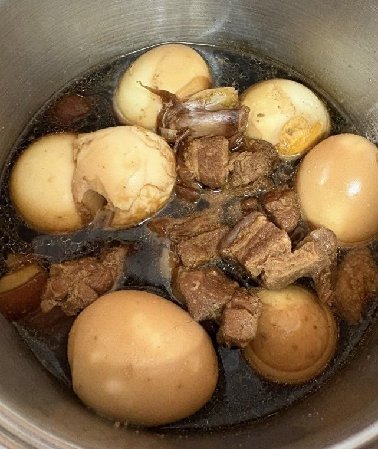
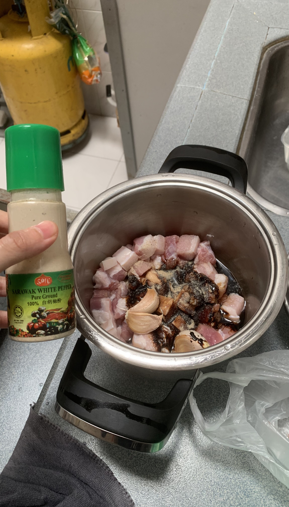
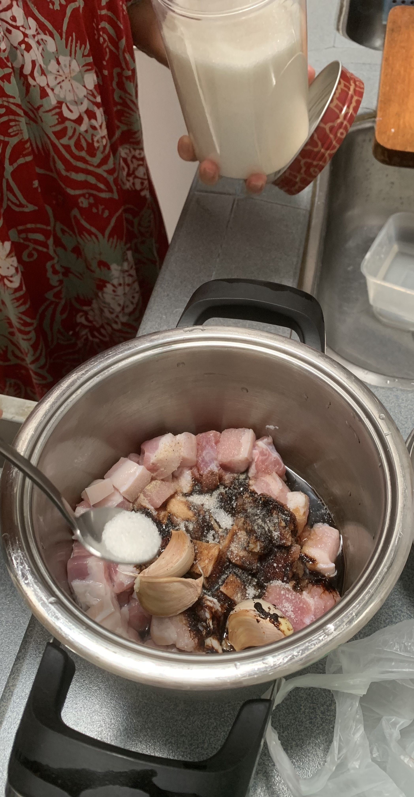
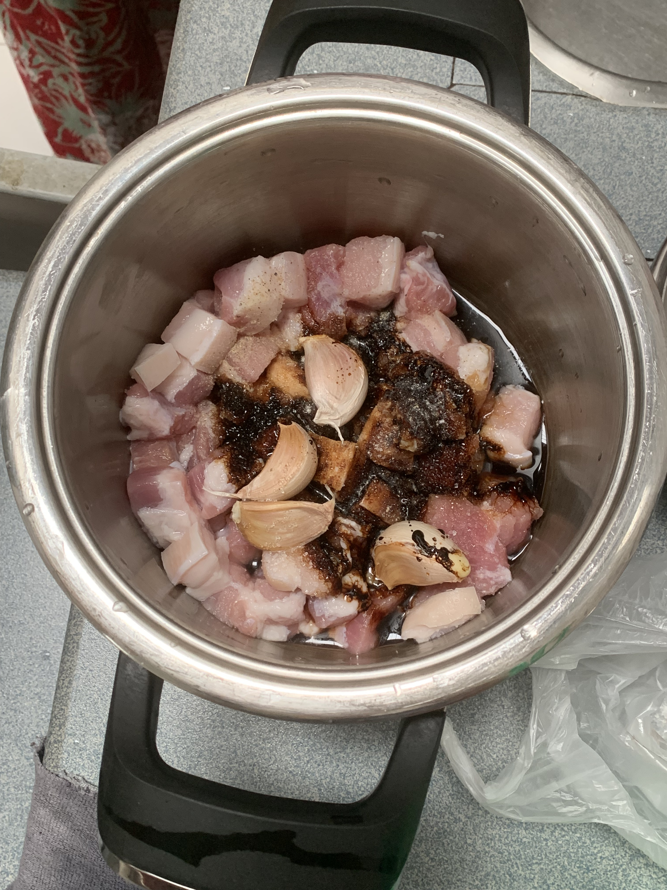
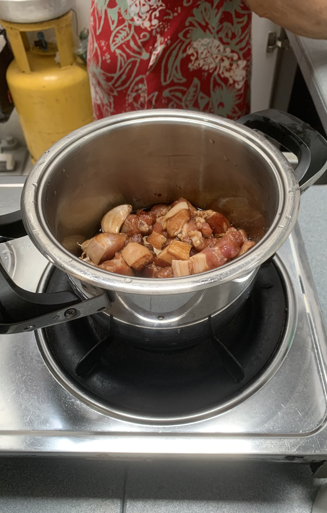
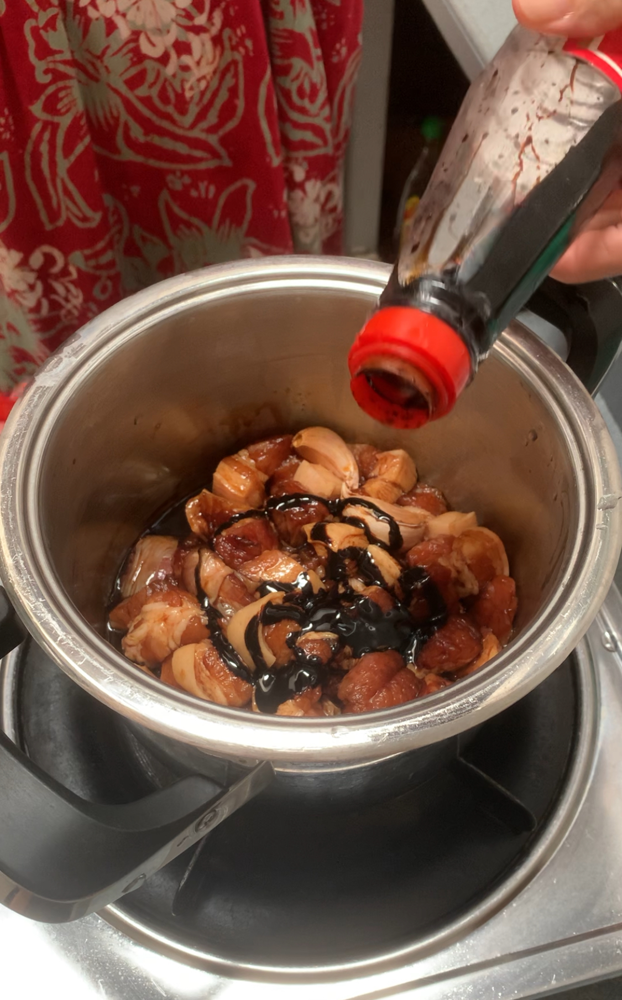
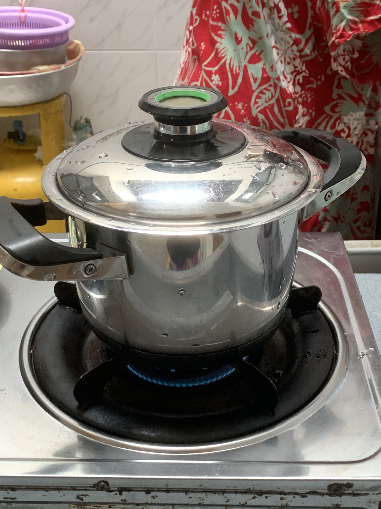
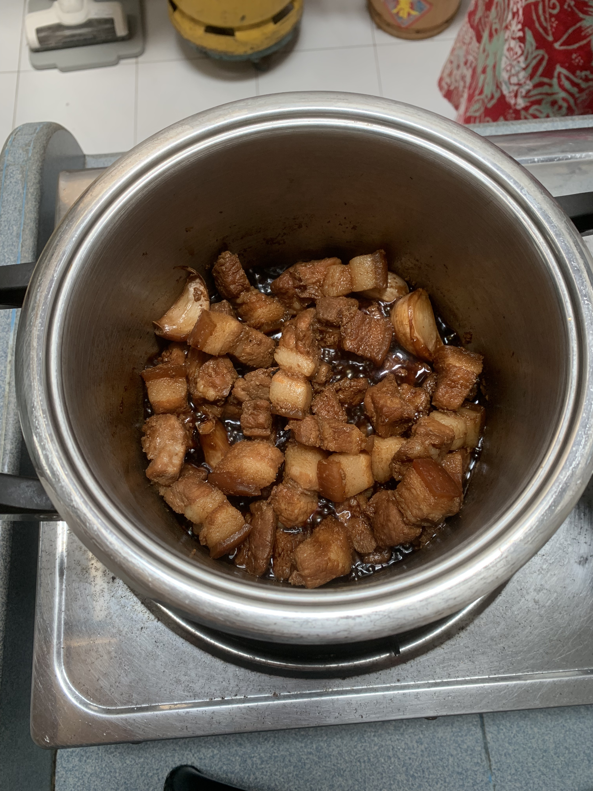
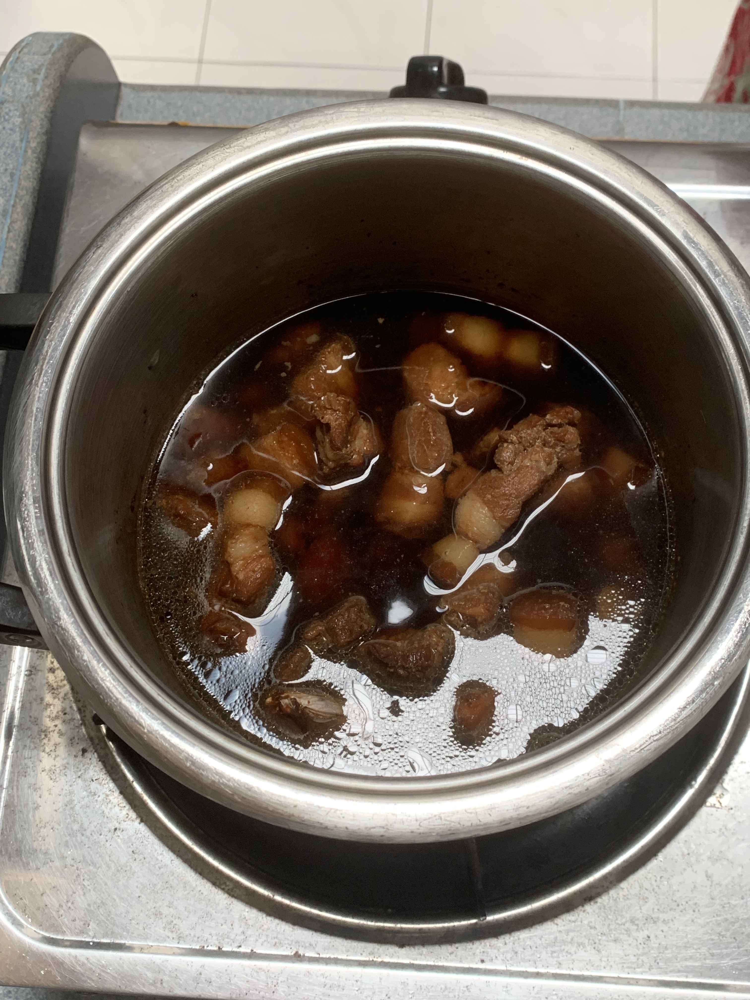
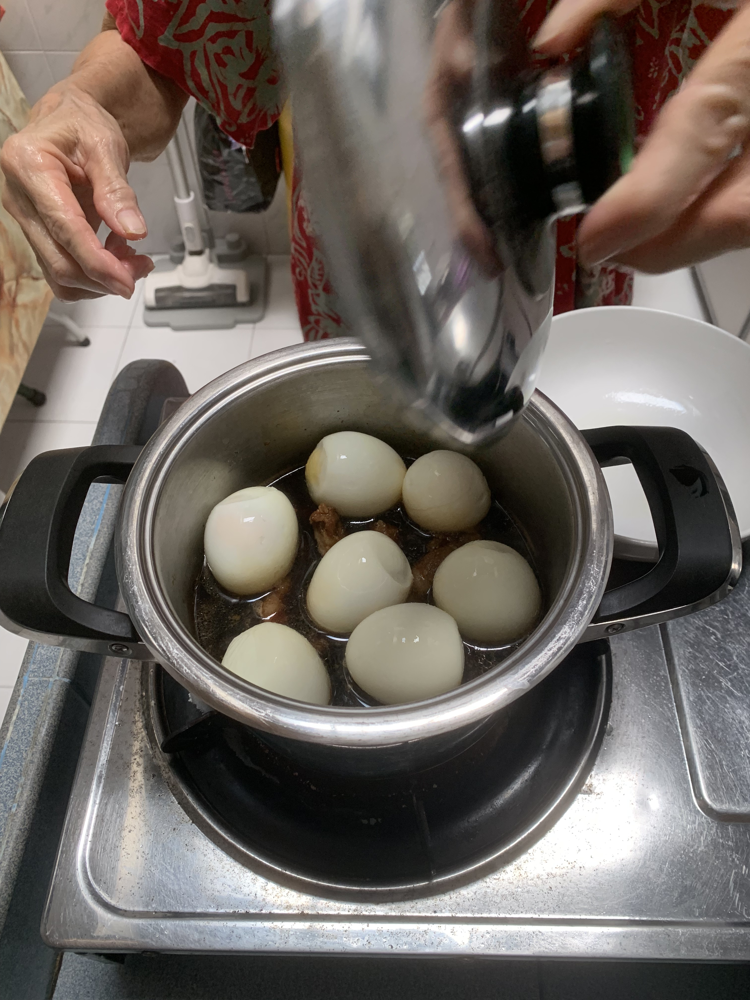

Tau Yu Bak
Ah Ma's | Cooked on 13 March 2026

Steps
Boil eggs and peel them. If you want to add taukwa, fry them first.
Wash pork belly and scrape the skin. Cut the pork into 3-layer pieces.
▲
▲
Mix with salt and wash off. Transfer to a pot.
▲
▲
Add salt, light soy sauce, dark soy sauce, washed skin-on garlic cloves, white pepper, white sugar. Maybe a bit more dark soy. Cover and cook slowly on low heat.






▲
▲
How to tell if it's cooked: Try to cut the meat with a spoon. If it's still tough, it's not ready.
Add water. Add in the eggs and simmer some more.



▲
▲
Done!